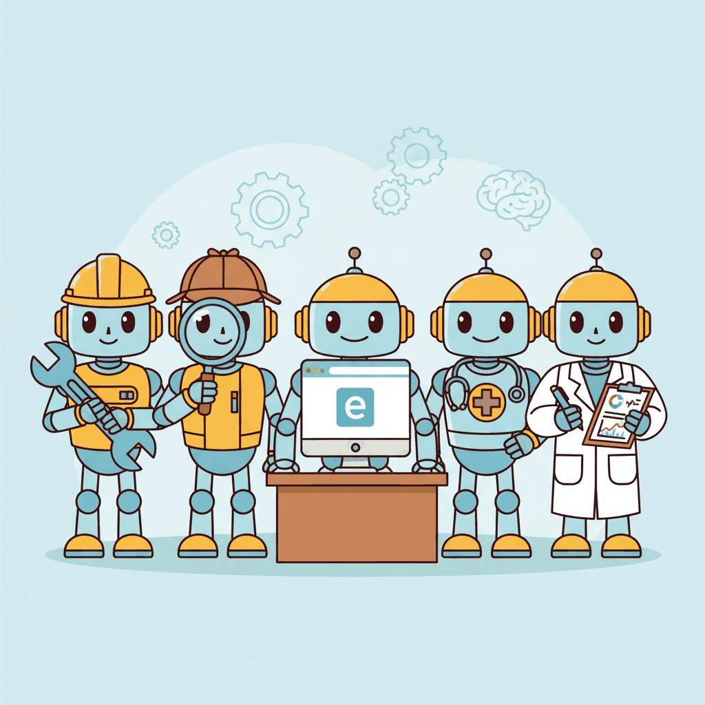
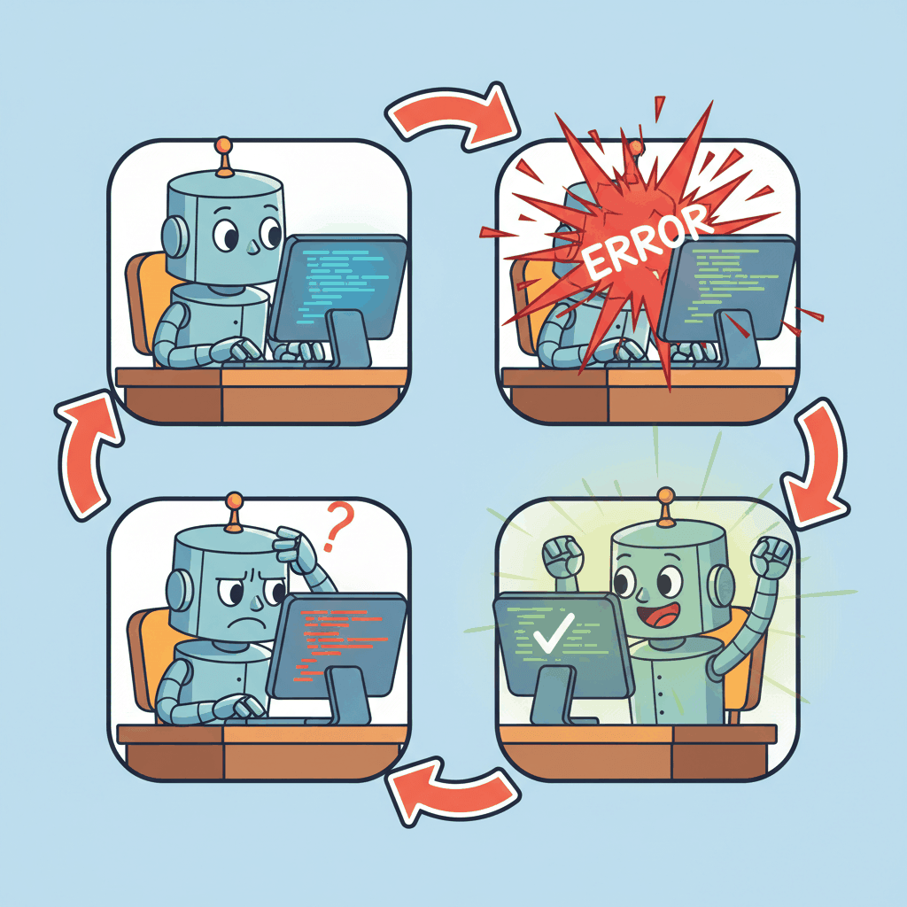
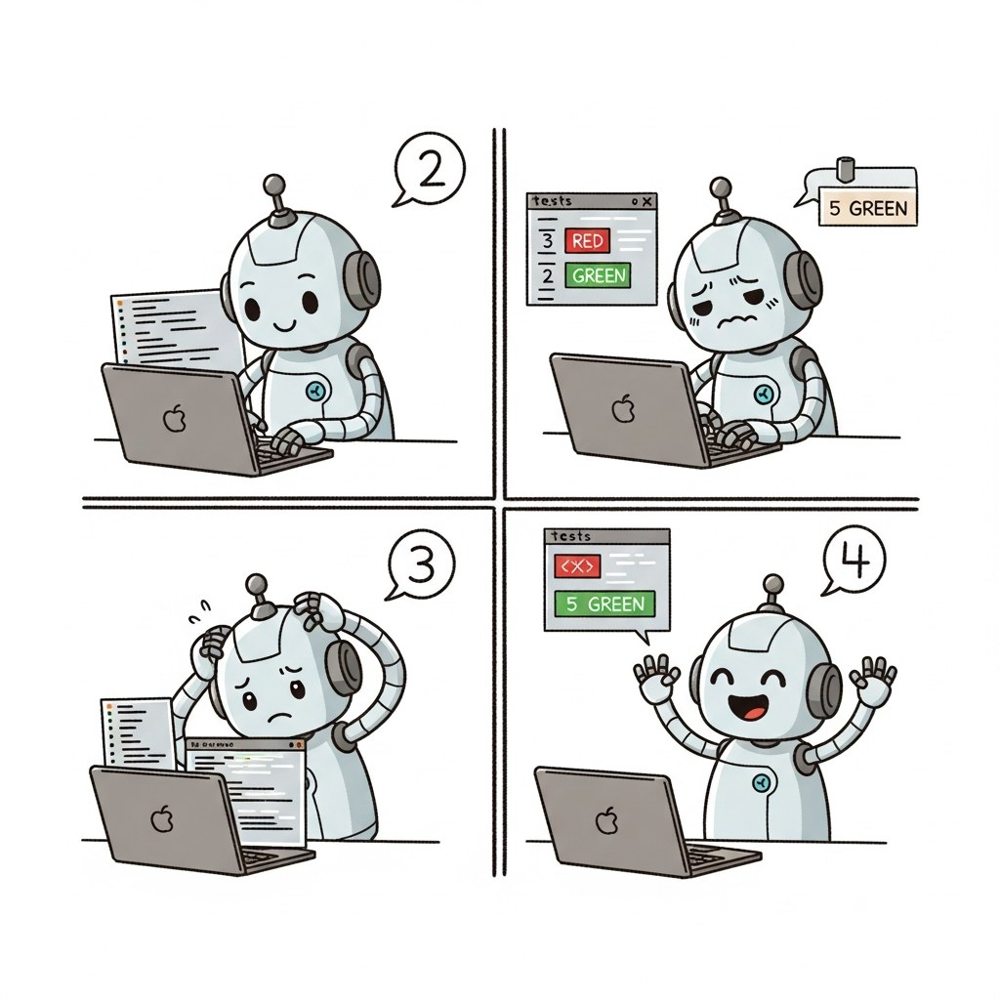

"Writing code is easy. Writing code that passes its own tests on the first try is a miracle I perform daily."
Agent X, Suspiciously Confident AI Agent
This section is about the architectural patterns that make code-generation agents work, not about which vendor product to buy. The core architecture is an LLM agent with file-system and terminal access in a ReAct-style loop: read source files, generate a change, run tests, observe failures, iterate. On top of that core, four named patterns appear repeatedly across research systems and production tools: the self-debug feedback loop, plan-then-execute, tree-of-code search, and multi-agent code review. We cover each pattern, how they compose, and how SWE-bench measures their effectiveness. The 2026 production vendor landscape (Claude Code, Cursor, Devin, Windsurf, Aider, GitHub Copilot Workspace, OpenAI Codex) is the dedicated subject of Section 29.4; this section is the architectural prerequisite for understanding any of those tools.
Prerequisites
This section builds on agent foundations from Chapter 26, tool use from Chapter 27, and multi-agent patterns from Chapter 28.

This section includes a hands-on lab: Lab: Build a Code Generation Agent with Self-Debugging. Look for the lab exercise within the section content.
29.1.1 The Anatomy of a Code Agent
A code-generation agent is a ReAct loop with file-system and terminal access. The agent reads source files to understand the codebase, generates code changes, runs tests or linters to verify the changes, and iterates until the tests pass or a maximum number of attempts is reached. This self-debugging capability is what distinguishes a code agent from a code-completion tool: a completion tool suggests the next line and walks away; an agent takes responsibility for the entire change and verifies its own work.
The architectural ingredients are small and well-defined. The agent needs (1) a working set of files it can read and write, (2) a sandboxed shell for executing tests and linters, (3) a search or grep tool for navigating large codebases without reading every file, and (4) a loop driver that feeds tool results back to the model on each iteration. Everything else (vendor-specific prompts, IDE integrations, MCP connectors) is product polish on top of these four ingredients. The architectural decisions that matter most are how the loop terminates, which patterns it uses to refine on failure, and how it manages context across iterations.
SWE-bench has become the standard benchmark for evaluating code agents against this architectural target. The benchmark presents real GitHub issues from popular open-source projects and measures whether the agent can produce a correct patch. Top-performing agents on SWE-bench Verified solve 50 to 60% of issues as of early 2026, with the best results coming from agents that combine strong reasoning models with effective codebase navigation and test execution tools. Comparable agents on the same benchmark differ more in their architectural patterns (covered in this section) than in their underlying models or in the brand on the box (covered in Section 29.4).
The biggest bottleneck in code-agent performance is not code generation but codebase understanding. An agent that can write perfect code is useless if it edits the wrong file, misunderstands the project's architecture, or does not know which tests to run. The architectural lever this insight implies: invest in the navigation tools (file search, symbol lookup, dependency analysis, test discovery) before investing in better generation prompts. The pattern is sometimes called search-before-read: locate candidate files by query before opening any of them, then read only the most relevant. Every successful 2026 production code agent implements some version of this pattern.
Self-Debugging Loop

This snippet implements a self-debugging loop where the agent runs code, catches errors, and iteratively fixes them.
import subprocess
from typing import Optional
class CodeAgent:
def __init__(self, llm, max_attempts: int = 3):
self.llm = llm
self.max_attempts = max_attempts
def solve_issue(self, issue_description: str, repo_path: str) -> Optional[str]:
# Step 1: Understand the codebase
context = self.explore_codebase(repo_path, issue_description)
for attempt in range(self.max_attempts):
# Step 2: Generate a patch
patch = self.llm.invoke(
f"Fix this issue in the codebase:\n\n"
f"Issue: {issue_description}\n\n"
f"Relevant code:\n{context}\n\n"
f"{'Previous attempt failed: ' + error if attempt > 0 else ''}\n"
f"Generate a unified diff patch."
)
# Step 3: Apply the patch
self.apply_patch(repo_path, patch.content)
# Step 4: Run tests
result = subprocess.run(
["python", "-m", "pytest", "--tb=short"],
cwd=repo_path,
capture_output=True,
text=True,
timeout=120,
)
if result.returncode == 0:
return patch.content # Success
# Step 5: Analyze failure for next attempt
error = result.stdout + result.stderr
context = self.analyze_failure(error, context)
return None # Exhausted attempts
def explore_codebase(self, repo_path: str, issue: str) -> str:
"""Use file search and grep to find relevant code."""
# Search for files mentioned in the issue
# Read test files to understand expected behavior
# Map the project structure
...
def analyze_failure(self, error: str, context: str) -> str:
"""Use the LLM to understand why the test failed."""
analysis = self.llm.invoke(
f"This test failed. Analyze the error and suggest what to fix:\n"
f"Error:\n{error}\n\n"
f"Current context:\n{context}"
)
return context + f"\n\nFailure analysis:\n{analysis.content}"The implementation above builds the loop from scratch for pedagogical clarity. The SWE-agent reference architecture (Yang et al., 2024) formalizes a more sophisticated version of the same loop, with an "Agent-Computer Interface" that exposes structured file-navigation and editing primitives the model can drive reliably. The 2026 production landscape, including the named vendor tools that wrap this architecture (Claude Code, Cursor, Devin, Windsurf, Aider, GitHub Copilot Workspace, OpenAI Codex), is covered in Section 29.4. Reading this section gives you the architectural vocabulary to compare them; reading 29.4 tells you which one to pick.
The self-debugging loop is what makes code agents qualitatively different from code completion tools. A completion tool suggests code and moves on; a code agent takes responsibility for correctness by running its own output, observing failures, and iterating. This is the ReAct pattern (see Section 26.1) specialized for software engineering: the "observation" comes from the test runner rather than a web search, and the "action" is editing code rather than calling an API. The feedback loop from real test execution grounds the agent's reasoning in reality, which is why code agents outperform pure generation approaches even when using the same underlying model.
29.1.2 Three Named Architectural Patterns

On top of the self-debug loop, three architectural patterns recur in code agents that beat the baseline. Each is a different way to spend extra compute or extra LLM calls to compensate for the model's first-attempt errors.
Plan-Then-Execute
A pure ReAct loop conflates planning and acting; the model decides what to do next on every step, with little long-horizon structure. The plan-then-execute pattern (formalized in the LLMCompiler and ProgramAgent papers, ubiquitous in 2026 production systems) splits this into two phases. A planning pass uses a strong model to produce a step-by-step plan ("step 1: read auth.py to understand session validation; step 2: add a new claims field to the JWT; step 3: update verify_token; step 4: run the auth test suite"). An execution pass then runs each step with a smaller, cheaper model, falling back to the planner only when a step fails. The architectural benefit is that the model only needs to think strategically once per task, instead of re-planning on every iteration.
Tree-of-Code
The self-debug loop is a linear search: try, fail, try again with the error. A tree-of-code agent (analogous to tree-of-thoughts reasoning) generates multiple candidate patches in parallel, runs the test suite on each, and keeps the branch that produces the most passing tests. Failed branches contribute their error traces to the prompt for the next round, so the agent learns from multiple failure modes simultaneously. On SWE-bench, tree-of-code with a beam width of three typically outperforms linear self-debug at the same total token budget because rare bug classes that linear search misses (off-by-one errors, edge-case handling) are more likely to be tried by at least one branch.
Multi-Agent Code Review
The third pattern adds a second model in a critique role. An implementer agent produces a patch; a separate reviewer agent reads the diff and the failing test output and proposes corrections or red-flags. Multi-agent code-review patterns work because the implementer is biased toward defending its own code, while a fresh reviewer can identify "this fix passes the test but introduces a subtle race condition" or "this change breaks the public API in a way the tests do not cover". Production systems typically gate critical commits (auth, payments, deployment scripts) behind a reviewer pass even when the implementer's tests are green. The pattern composes naturally with plan-then-execute (the planner becomes the reviewer for completed steps) and tree-of-code (the reviewer picks the best branch).
29.1.3 Production Considerations
Production code agents combine the architectural patterns above with three operational practices that are independent of which pattern you use. Test-driven prompting writes or identifies the relevant tests first, then generates code that passes them; this is what the self-debug loop actually needs to be a tight feedback cycle. Incremental changes keep each agent action small and testable rather than asking for whole-feature rewrites in one shot, which lets the test runner provide useful signals between steps. Context management strategically selects which files to include in the prompt based on the change being made, exploiting the search-before-read pattern from 29.1.1.
The production concern that overrides all architectural choices is safety. A code agent with file-system access can overwrite important files, delete directories, or introduce security vulnerabilities. Production deployments use sandboxed environments (Docker, E2B), restrict file-system access to the project directory, run with limited permissions, and require human review for changes to critical files (configuration, authentication, deployment scripts). See Section 49.2 for details on sandboxed execution environments, and Section 29.4 for how individual vendor tools implement these guardrails.
A code agent that passes all tests may still produce incorrect, insecure, or unmaintainable code. Tests only verify the behaviors they cover; if the test suite is incomplete (and most are), the agent can introduce bugs in untested paths. More subtly, agents sometimes "overfit" to tests by writing code that passes the specific test cases but fails on edge cases or uses brittle patterns. Always combine test-driven agent development with code review (human or automated), static analysis, and security scanning. Passing tests is a necessary condition for correctness, not a sufficient one. Code quality for AI-generated code is detailed in Chapter 29.
Who: A backend engineer at a payments startup paired with an in-IDE code agent.
Situation: The engineer maintains a 500-file Python monolith with no comprehensive architecture documentation. A production alert flags duplicate payment processing, suggesting a race condition in a queue-processing subsystem the engineer did not write.
Problem: A naive code agent reading files in lexical order burned context tokens on irrelevant modules and ran out of context before finding the bug. After two hours and a $40 API bill, the agent gave up.
Dilemma: Either give the agent a larger context window (linear cost increase, sub-linear capability gain) or change the agent's navigation strategy entirely.
Decision: The engineer switched to a search-before-read agent that grepped the codebase before opening any files.
How: The agent first issued a grep for "payment.*queue" and "process_payment". Three files matched. It read those, identified services/payments/queue_processor.py as holding shared state accessed without locking, generated a fix with mutex guards, ran the test suite, discovered the fix broke a different test (the test expected ordering the mutex now serializes), iterated one more time with the test-failure context, and committed a passing patch.
Result: Bug fixed end-to-end in a single agent session at a fraction of the failed run's token cost, with a passing test suite.
Lesson: The pattern that made the difference was navigation, not generation; agents that search first, scope their working set, and only then open files succeed where read-everything agents fail, which is exactly why the vendor tools in Section 29.4 that implement this pattern win on SWE-bench.
Never let a code-executing agent run directly on your production server. Use Docker containers, E2B sandboxes, or AWS Lambda with strict resource limits (memory, CPU, network access). One malformed command can take down your system.
For the general agent foundations these specialized agents extend, see Section 26.1. For agent safety considerations specific to autonomy, see Section 49.2. For domain coverage of other specialized agents in this chapter, see Section 29.4.
Objective
Build a code agent that can solve simple programming tasks by writing code, running tests, analyzing failures, and iterating until the tests pass.
What You'll Practice
- Creating an agent with file read/write and command execution tools
- Implementing a self-debugging loop: generate code, run tests, analyze failures, retry
- Measuring success rate, average attempts per solution, and total token cost
- Implementing graceful failure paths for unsolvable problems
Setup
The following cell installs the required packages and configures the environment for this lab.
You will need an OpenAI API key and a local Python environment for running generated code.
Steps
Step 1: Create the agent with tools
Define tools for file reading, file writing, and command execution. Set up the AI agent.
# TODO: Define tool schemas for read_file, write_file, run_command
# and implement the agent loop that calls the LLM with tool resultsStep 2: Implement the self-debugging loop
Generate code, run tests, and if tests fail, feed the error output back to the agent for another attempt.
# TODO: Implement retry logic with max_attempts=3
# On each failure, include the error traceback in the next promptStep 3: Test on coding challenges
Run the agent on 5 small challenges: string manipulation, data structures, file parsing, API client, and a math problem.
# TODO: Define 5 challenges with test cases and run the agent on eachStep 4: Collect metrics and add graceful failure
Record success rate, attempts per task, and token cost. Add a "give up and explain" path for problems unsolved after 3 attempts.
# TODO: Track metrics in a DataFrame and implement the give-up pathExpected Output
- A working agent that solves at least 3 out of 5 coding challenges
- A metrics table with pass/fail, attempts, and token cost per challenge
- Clear "give up" explanations for unsolved problems
Stretch Goals
- Add a code review step before running tests to catch obvious errors
- Implement incremental debugging: fix one failing test at a time rather than regenerating everything
- Compare performance between different models (GPT-4o-mini vs. GPT-4o vs. Claude)
Complete Solution
# Complete solution outline for the self-debugging code agent
# Key components:
# 1. Tool definitions: read_file, write_file, run_command
# 2. Agent loop: call LLM, execute tools, feed results back
# 3. Retry logic with attempt counter and error context
# 4. Metrics collection in a pandas DataFrame
# See section content for the full implementation pattern.- Code generation agents combine LLM code generation with tool-based execution and test feedback in iterative loops.
- Self-debugging loops significantly improve pass rates by feeding test errors back to the model for correction.
- The core tool set for code agents includes file read/write, command execution, and search.
Show Answer
A self-debugging loop runs the generated code against tests, feeds error messages back to the LLM, and lets it fix the code iteratively. This improves pass rates because many initial code generations are close to correct but have minor bugs that the LLM can fix when given the error context.
Show Answer
At minimum: file read (to understand existing code), file write (to produce code), and command execution (to run tests and get feedback). More sophisticated agents add search (to find relevant files in large repos), diff generation, and linting.
Exercises
Describe the typical architecture of a production code generation agent. What tools does it need, and how does the agent loop differ from a general-purpose agent?
Answer Sketch
A code agent needs: file read/write tools, code execution (sandbox), test runner, search/grep tools, and possibly version control tools. The loop differs because it includes a tight feedback cycle: write code, run tests, observe failures, fix code. The agent must maintain a mental model of the codebase structure and track which files have been modified.
Write a Python function that implements a self-debugging loop: generate code, run it, capture any error, and feed the error back to the LLM for correction. Limit to 3 retry attempts.
Answer Sketch
In a loop: (1) call the LLM to generate code, (2) execute in a sandbox, (3) if execution succeeds, return the result, (4) if it fails, append the error traceback to the conversation and retry. Track attempt count and break after 3. Include the original requirements and all previous attempts in each retry prompt so the model does not repeat the same mistake.
What factors determine whether a code agent succeeds on a SWE-bench task? Rank the following by importance: model quality, tool design, codebase navigation strategy, and context window size.
Answer Sketch
1. Codebase navigation strategy (finding the right files is the prerequisite for everything else). 2. Model quality (reasoning about the fix). 3. Tool design (efficient file reading, search, and editing). 4. Context window size (important but manageable with good navigation). Many failures are navigation failures, not reasoning failures. An agent that cannot find the relevant code cannot fix the bug.
Implement a 'search before read' repository navigation strategy. The agent should first search for relevant files using grep/ripgrep, then read only the most relevant files, rather than reading entire directories.
Answer Sketch
Step 1: search for keywords from the issue description using a search tool. Step 2: rank matching files by relevance (number of matches, file path heuristics). Step 3: read the top 3 to 5 files. Step 4: if the relevant code is not found, broaden the search with related terms. This approach is far more token-efficient than reading files sequentially.
What are the risks of 'vibe-coding' (generating code from high-level descriptions without reviewing the output)? How should developers balance productivity gains with code quality?
Answer Sketch
Risks: subtle bugs the model introduces but the developer does not catch, security vulnerabilities in generated code, accumulation of technical debt from code the developer does not fully understand, and over-reliance on the model for understanding the codebase. Balance: use AI for drafting and boilerplate, but always review generated code, run tests, and understand what the code does before merging.
What Comes Next
In the next section, Browser and Web Agents, we explore agents that navigate websites, fill forms, extract data, and perform complex web-based tasks autonomously.